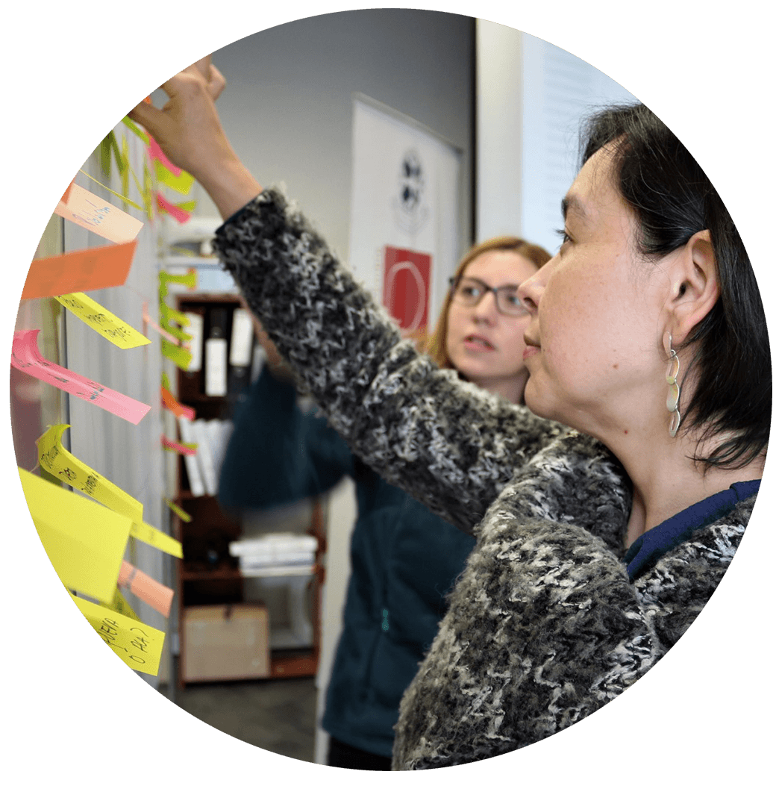
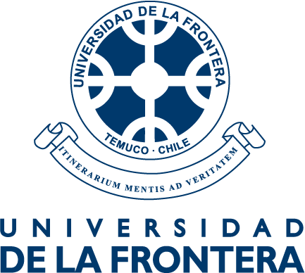
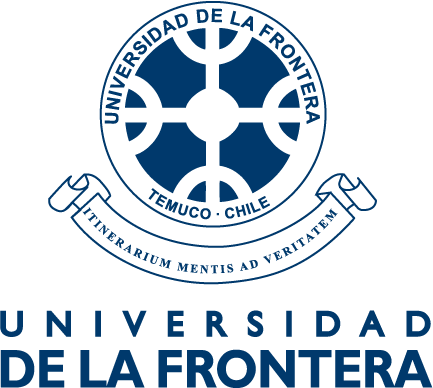
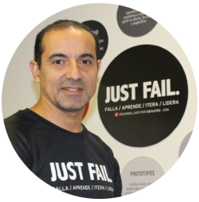

Gestión de Tecnologías Emergentes
Programa especializado que introduce a los estudiantes de doctorado en la creación de empresas basadas en tecnologías emergentes y comercialización de tecnología.


Gestión de Tecnologías Emergentes
Programa especializado que introduce a los estudiantes de doctorado en la creación de empresas basadas en tecnologías emergentes y comercialización de tecnología.
¿Cómo gestionar las tecnologías emergentes que se desarrollan a partir de las investigaciones aplicadas?, ¿cómo organizar el conocimiento, el talento y los recursos para gestionar las tecnologías emergentes?
Programa gestión de Tecnologías Emergentes, es un programa especializado que introduce estudiantes de doctorado en la creación de empresas basadas en tecnologías emergentes y comercialización de tecnología. El enfoque del curso es la integración de los negocios y la tecnología para la creación y el desarrollo exitoso de negocios derivados de investigaciones de frontera.
El programa contempla tópicos que abarcan desde la la concepción de la idea, la gestión de la I&D, la innovación basada en tecnología, la generación de empresas derivadas y el acceso al financiamiento y los mercados.
Durante el curso, se exponen las variables que permiten analizar las industrias emergentes, sus ciclos tecnológicos, su evolución, composición, curvas de desarrollo, potencial y vínculo con los mercados, centrando la atención en los conceptos y variables que permiten la generación de ventajas competitivas a partir de la innovación. Así mismo, se desarrollan los conceptos que permiten concebir tecnologías y productos, desarrollando los mecanismos de generación y captura de valor. El curso incorpora el análisis de modelos de negocio y las configuraciones organizacionales que facilitan la innovación y penetración de mercados con productos y servicios altamente distintivos.
¿Qué aprenderás durante este curso 🤓?
Este curso es organizado junto a los Doctorados de Recursos Naturales y Doctorado en Ciencias mención Biología y Celular y se enmarca en Proceso de Seguimiento del Convenio de Desempeño de Internacionalización de los Programas de Doctorado.
 

Ing. Civil industrial, MBA y Certificate in Management and leadership MIT. Ha presidido numerosas organizaciones vinculadas a la ciencia, desarrollo tecnológico, innovación y formación. Amplia experiencia en el desarrollo tecnológico y estratégico de negocios. En la actualidad abocado a mejorar procesos formativos que faciliten la innovación y el emprendimiento entre estudiantes y docentes con metodologías activas de aprendizaje.
Carlos Isaacs
Director iDEAUFRO

Creamos experiencias que transformen, inspiren y construyan en individuos y organizaciones la capacidad de aprender.
Programa asignatura - Fechas
Temáticas a abordar
Fechas